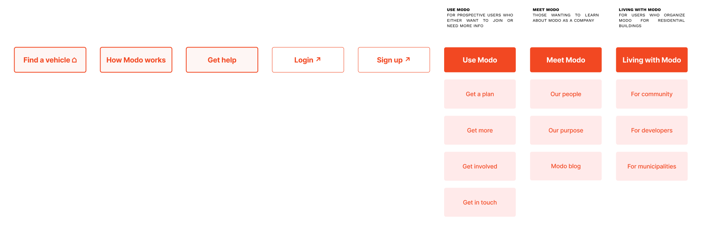
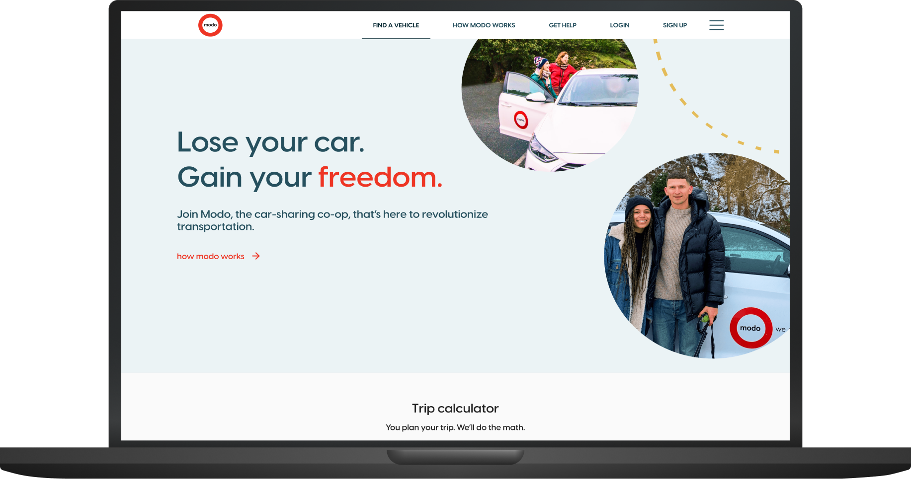

Modo Carsharing B2C
End-to-end website overhaul for Vancouver's largest B-Corp carsharing coop, simplifying the content experience across marketing and member touchpoints. This project involved a branding refresh, app alignment, content overhaul, and full re-platform of modo.coop to give the marketing team more autonomy over content management.
2022 - ongoing · UX/UI Designer and Scrum Master
Project Management: Sarah Bain, Thelma Wiegert
UI Design and Animation: Chris Samuel, Sonia Yao
User Research: Rebecca Harrington
Content Strategy: Mike MacKinnon
Web Development: Jason Landry

Modo site revamp
Initial competitive analysis


